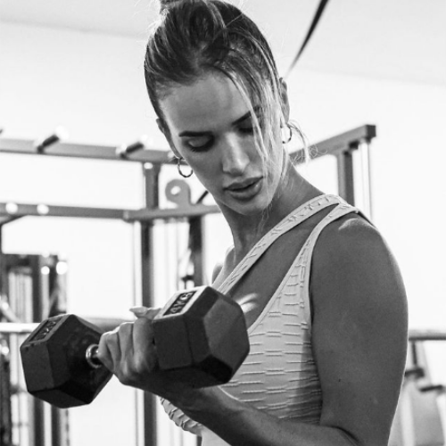
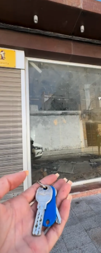
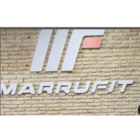

En el revuelo del 2021, Soledad decidió que era hora de dar un giro a su vida y lanzarse a abrir su propio gimnasio. Aunque el mundo parecía estar en caos, ella vio una oportunidad para sembrar esperanza y cambio en su comunidad.
Con cada mancuerna que levantaba y cada clase que impartía, Soledad no solo estaba construyendo músculos, sino también levantando el ánimo de aquellos que cruzaban la puerta de su gimnasio. Cada sudor derramado era un recordatorio de que, a pesar de los desafíos, siempre hay una forma de superarlos.
Y ahora, en el radiante 2024, Soledad ha dado un paso aún más grande al abrir su propio gimnasio con su nombre. Es un lugar donde la gente puede encontrar inspiración, apoyo y la motivación necesaria para superar cualquier obstáculo que se les presente.
El gimnasio de Soledad es como un faro brillante en medio de la oscuridad, un recordatorio de que incluso en los días más difíciles, siempre hay una luz al final del túnel.
